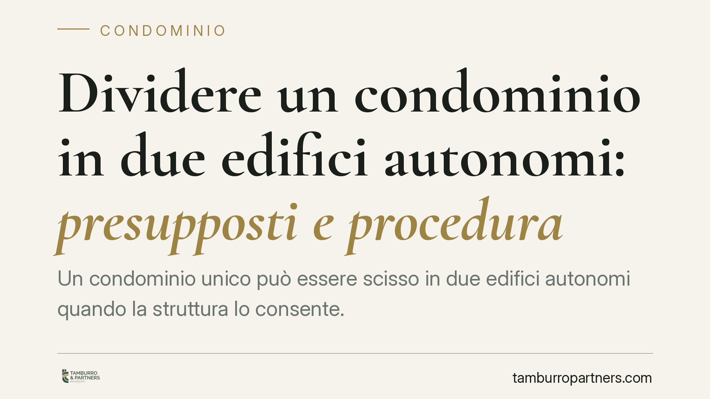

Dividere un condominio in due edifici autonomi: presupposti e procedura
Un condominio unico può essere scisso in due edifici autonomi quando la struttura lo consente. La legge richiede l'autonomia funzionale delle porzioni e una delibera assembleare con quorum qualificato. Se manca l'accordo, il singolo condomino può rivolgersi al giudice. Vediamo presupposti, maggioranze e cosa fare in concreto per gestire correttamente la procedura.

Il quadro: quando si può dividere un condominio
Lo scioglimento del condominio consiste nel dare vita a due (o più) condominii distinti a partire da un unico fabbricato. Non è un'operazione libera: presuppone che le porzioni da separare abbiano autonomia strutturale e funzionale.
In concreto, ciascun edificio risultante deve poter esistere come entità indipendente: ingressi separati, impianti scindibili, assenza di collegamenti indispensabili tra le due parti. Se i due corpi di fabbrica restano tecnicamente interdipendenti — per esempio condividono un unico impianto essenziale non frazionabile — lo scioglimento non è ammissibile.
Inquadramento normativo
La disciplina è contenuta nell'art. 61 disp. att. cod. civ., che consente lo scioglimento quando un gruppo di edifici già costituiti in condominio può dividersi in più condominii. La norma richiede che il fabbricato o il gruppo di edifici presenti le caratteristiche oggettive per la separazione.
La delibera di scioglimento va approvata dall'assemblea con la maggioranza prevista dall'art. 1136, comma 2, cod. civ.: il voto favorevole della maggioranza degli intervenuti che rappresenti almeno la metà del valore dell'edificio (500 millesimi).
Un punto merita attenzione. Sul computo del quorum non vi è piena uniformità nelle ricostruzioni interpretative: alcune riferiscono la maggioranza all'intero condominio originario, altre alla porzione oggetto di scissione. Per questa ragione consigliamo di far verificare in via preventiva il perimetro del quorum applicabile al caso concreto, prima di convocare l'assemblea, evitando delibere impugnabili per difetto di maggioranza.
Fase assembleare e via giudiziale
La strada ordinaria è quella assembleare. L'amministratore convoca l'assemblea, che delibera con il quorum sopra indicato. Raggiunta la maggioranza, si procede alla formazione dei nuovi condominii, con distinte tabelle millesimali e nomina dei rispettivi amministratori.
Quando in assemblea la maggioranza non si forma, l'art. 61 disp. att. cod. civ. prevede una tutela ulteriore: il singolo condomino interessato alla separazione può rivolgersi all'autorità giudiziaria. Il giudice verifica la sussistenza dei presupposti oggettivi — l'autonomia dei due edifici — e, se ricorrono, dispone lo scioglimento anche in mancanza dell'accordo assembleare. È una via che ha senso proprio quando la volontà del corpo condominiale è bloccata.
Le parti comuni residue: attenzione al supercondominio
Lo scioglimento non sempre elimina ogni comunione. Può accadere che alcuni beni o servizi restino comuni ai due edifici risultanti: un viale d'accesso, un impianto centralizzato non frazionabile, un'area di parcheggio condivisa.
In questi casi non si crea automaticamente un supercondominio. La figura del supercondominio (art. 1117-bis cod. civ.) ricorre solo quando più edifici, ciascuno autonomamente condominio, condividono beni, impianti o servizi comuni. È dunque un esito eventuale, non necessario, che dipende dall'effettiva esistenza di parti comuni ai fabbricati separati. Se non vi sono beni comuni residui, i due condominii restano del tutto distinti e non sorge alcuna sovrastruttura.
Implicazioni pratiche
Per i condòmini, lo scioglimento comporta la ridefinizione delle tabelle millesimali, la separazione dei bilanci e, spesso, la revisione dei contratti di fornitura. Per l'amministratore significa gestire il passaggio: chiusura della gestione unitaria, riparto delle poste attive e passive, consegna della documentazione ai nuovi amministratori.
Gli aspetti più delicati sono catastali e impiantistici: la separazione va documentata e, dove necessario, resa opponibile ai terzi.
Cosa fare in concreto
- Verificate l'autonomia degli edifici. Fate accertare da un tecnico che ciascuna porzione abbia ingressi, impianti e struttura indipendenti: senza questo presupposto lo scioglimento non è ammissibile.
- Controllate il quorum applicabile. Chiarite in via preventiva se la maggioranza dell'art. 1136, comma 2, si computa sull'intero condominio o sulla porzione da scindere, per non incorrere in delibere annullabili.
- Convocate correttamente l'assemblea. Inserite lo scioglimento come punto specifico all'ordine del giorno e verbalizzate con precisione voti e millesimi.
- Mappate le parti comuni residue. Individuate beni e impianti che resterebbero condivisi e valutate se sorge un supercondominio ex art. 1117-bis cod. civ.
- Se l'assemblea si blocca, valutate la via giudiziale. In assenza di maggioranza, il singolo condomino può chiedere al giudice lo scioglimento, provando i presupposti oggettivi.
---
Contributo informativo a cura di Tamburro & Partners - Avv. Giuseppe Tamburro. Non costituisce parere legale.
Ogni condominio ha una storia a sé.
Se gestisci un'amministrazione e vuoi un confronto su una specifica questione condominiale, scrivi allo studio. Ti rispondiamo entro un giorno lavorativo.